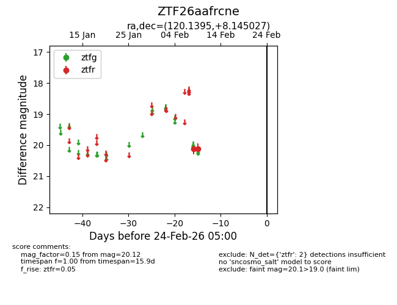
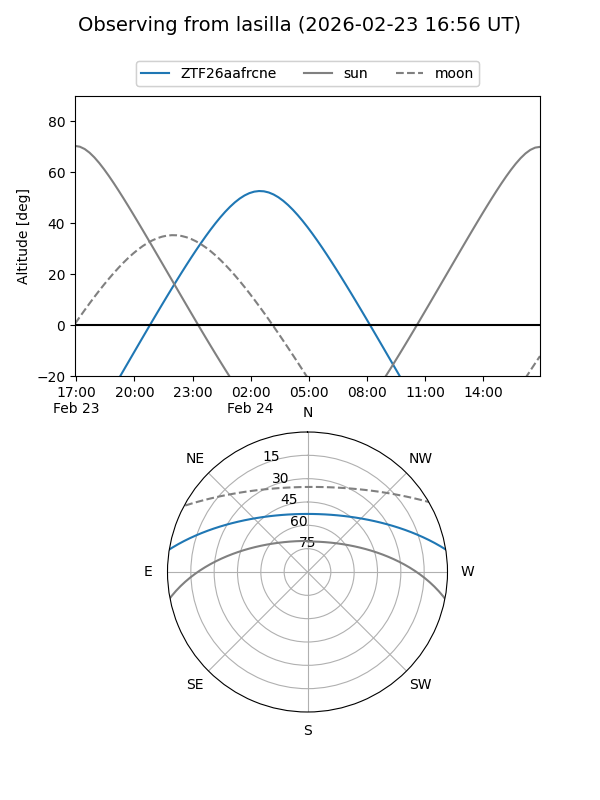
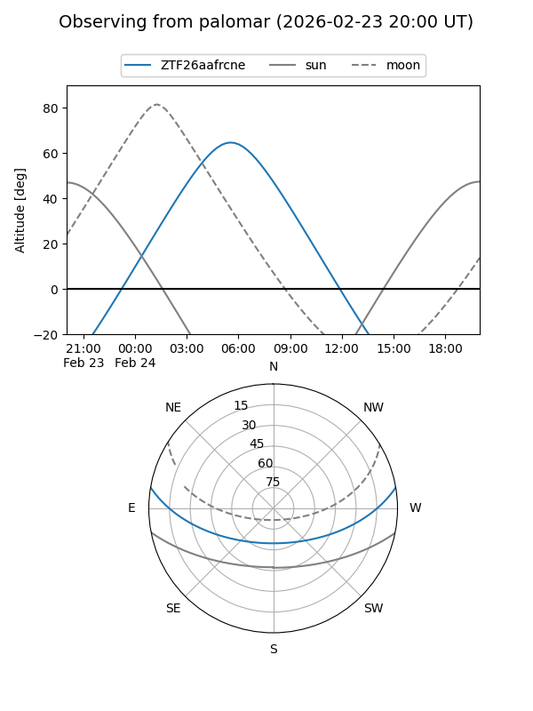

ZTF26aafrcne
Target ZTF26aafrcne at 2026-02-24 09:08
Aliases and brokers:
FINK: link
Lasair: link
ALeRCE: link
alt names
ZTF26aafrcne (ztf,fink_ztf)
Coordinates:
equatorial (ra, dec) = 120.1395,+8.14503
equatorial (HMS+DMS) = 08:00:33.49,+08:08:42.10
galactic (l, b) = (213.4161,+19.04442)
Flags:
Photometry:
last ztfr=20.12
2 ztfr detections
Lightcurve

Visibility


Additional plots